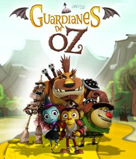

GUARDIANES DE OZ

Ozzi es un pequeño, pero inteligente mono volador, hijo del legendario guerrero Goliat.
Ambos son parte del ejercito de monos voladoresque sirve Eveline; la malvada bruja del Oeste.
A diferencia del resto de su especie, Ozzy no está convencido en servir ciegamente a Eveline, así que cuando la bruja pone en marcha sus planes para atacar el reino él decide ir en busca de los legendarios “Guardianes de Oz” para que luchen contra ella.
Ver Trailer... -->